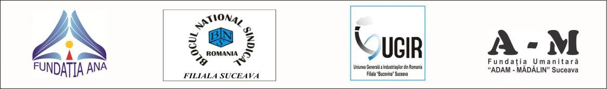

2018–2019 · POCA / Fondul Social European
INAPP – Inițiativa Națională pentru Formularea și Promovarea de Politici Publice Alternative
Creșterea capacității organizațiilor neguvernamentale și a partenerilor sociali de a formula și promova propuneri alternative la politicile publice, printr-o rețea națională de informare și conștientizare.
Perioada23 mai 2018 – 22 decembrie 2019
FinanțatorProgramul Operațional Capacitate Administrativă 2014–2020, cod SIPOCA 276 / MySMIS 112787
ParteneriatLider: Fundația de Caritate și Întrajutorare „ANA” Suceava; parteneri: Blocul Național Sindical – filiala Suceava, UGIR – filiala „Bucovina” Suceava, Fundația Umanitară „Adam-Mădălin” Suceava
Obiectivul general
Creșterea capacității organizațiilor neguvernamentale, sindicale și patronale din România de a formula și promova propuneri alternative la politicile publice inițiate de Guvern.
Obiective specifice
- Informarea și conștientizarea a 400 de reprezentanți ai ONG-urilor și ai organizațiilor sindicale și patronale din România cu privire la formularea și promovarea de politici publice alternative, prin crearea și dezvoltarea unei rețele tematice naționale;
- Creșterea gradului de instruire a 100 de reprezentanți ai ONG-urilor și ai organizațiilor sindicale și patronale din România, prin dezvoltarea cunoștințelor și abilităților în domeniul formulării și promovării de politici publice;
- Sprijinirea a 60 de reprezentanți ai ONG-urilor și ai organizațiilor sindicale și patronale din România în elaborarea a 4 politici publice în domeniile: industrial, societății civile și democrației, afacerilor, social și angajării forței de muncă;
- Promovarea la nivel național a 4 propuneri alternative de politici publice elaborate de reprezentanți ai ONG-urilor și ai organizațiilor sindicale și patronale din România.
Ce s-a făcut
- 8 seminarii regionale de informare și conștientizare, în toate regiunile de dezvoltare (Suceava, Cluj, Timișoara, Craiova, Brașov, Ploiești, București, Constanța);
- cursuri de instruire a grupului țintă în elaborarea de politici publice și ateliere de lucru;
- 4 propuneri alternative de politici publice, în domeniile economic, social și cultural, transmise instituțiilor competente;
- o rețea națională de informare, platforma online inapp.ro, un forum, o broșură (500 de exemplare) și un ghid de politici publice;
- 8 spoturi radio și 8 spoturi TV difuzate în toate regiunile; conferință națională și conferință de finalizare.
Rolul fundației
Fundația a asigurat componenta de informare și comunicare: platforma online, broșura, spoturile radio și TV, campania națională de promovare a seminariilor și a rezultatelor. Activitățile de sustenabilitate au continuat și după încheierea proiectului: actualizarea platformei, o broșură informativă și un seminar online.
Fotografii


Documente
- Propunere de politică publică alternativă – domeniul industrial (PDF)
- Propunere de politică publică alternativă – asistenți personali (PDF)
- Propunere de politică publică alternativă – mediul de afaceri (PDF)
- Propunere de politică publică alternativă – INECA (PDF)
- Broșură: elaborarea propunerilor alternative de politici publice (PDF)
- Ghid de politici publice INAPP (PDF)
- Comunicat de presă final (PDF)
